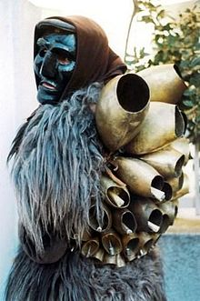

I Mamuthones sono, assieme agli Issohadores, maschere tipiche del carnevale di Mamoiada in Sardegna. Le due figure si distinguono per i vestiti e per il modo di muoversi all'interno della processione: i Mamuthones procedono affaticati e in silenzio mentre gli Issohadores vestono in modo colorato e danno movimento alla processione.
L'origine dei mamuthones resta ancora oggi controversa. Secondo uno studio di Marcello Madau, archeologo dell'accademia di Belle arti di Sassari, mancano fonti scritte che testimonino la presenza dei Mamuthones in tempi lontani (seppur considerando che la trasmissione di usi e costumi in Sardegna è prettamente orale). Il Wagner non ne parla. Secondo lo stesso studio, comunque, testimonianze orali attestano che i Mamuthones sfilavano già nel XIX secolo. Alcuni sostengono invece che il rito risalga all'età nuragica, come gesto di venerazione per gli animali, per proteggersi dagli spiriti del male o per propiziare il raccoltos. Fra le ipotesi avanzate sull'origine della rappresentazione vi sono anche una celebrazione della vittoria dei pastori di Barbagia sugli invasori saraceni fatti prigionieri e condotti in corteo, oppure un rito totemico di assoggettamento del bue, o anche una processione rituale fatta dai nuragici in onore di qualche nume agricolo e pastorale. Alcuni studiosi sostengono un legame con riti dionisiaci, altri negano questo collegamento, e la includono invece fra i riti che segnano il passaggio delle stagioni.
La maschera facciale del mamuthone (visera) è nera e di legno, bianca quella dell'issohadore. Viene assicurata al viso mediante cinghiette in cuoio e contornata da un fazzoletto di foggia femminile. Il corpo del mamuthone viene coperto da pelli di pecora nera (mastruca), mentre sulla schiena è sistemata una serie di campanacci (carriga). L'Issohadore, invece, indossa un copricapo detto berritta, maschera bianca, un corpetto rosso (curittu), camicia e pantaloni bianchi, una bandoliera di campanellini in bronzo (sonajolos), lo scialletto, le ghette in orbace (cartzas) scarponi in pelle e infine la fune (soha). Le maschere vengono prodotte con vari tipi di legno successivamente annerito. Oltre al fico viene impiegato l'ontano e l'olmo; qualcuna è in castagno o in noce, mentre anticamente le si produceva in pero selvatico.
La maschera facciale del mamuthone (visera) è nera e di legno, bianca quella dell'issohadore. Viene assicurata al viso mediante cinghiette in cuoio e contornata da un fazzoletto di foggia femminile. Il corpo del mamuthone viene coperto da pelli di pecora nera (mastruca), mentre sulla schiena è sistemata una serie di campanacci (carriga). L'Issohadore, invece, indossa un copricapo detto berritta, maschera bianca, un corpetto rosso (curittu), camicia e pantaloni bianchi, una bandoliera di campanellini in bronzo (sonajolos), lo scialletto, le ghette in orbace (cartzas) scarponi in pelle e infine la fune (soha). Le maschere vengono prodotte con vari tipi di legno successivamente annerito. Oltre al fico viene impiegato l'ontano e l'olmo; qualcuna è in castagno o in noce, mentre anticamente le si produceva in pero selvatico.
La sfilata dura dal pomeriggio fino alla tarda sera; per tutto il giorno i figuranti si limitano nel mangiare e nel bere poiché l'esibizione richiede sforzo e le cinghie dei campanacci comprimono il torace limitandone l'estensione e, di conseguenza, la respirazione. Il comportamento dei Mamuthones e degli Issohadores non ricorda un'allegra carnevalata quanto una solenne processione composta e ordinata, una cerimonia che ricorda un corteo religioso. Il passo cadenzato per avanzare e scuotere i campanacci ricorda una danza, «una processione danzata» come l'ha definita l'etnologo Raffaello Marchi che per primo, negli anni 40, ha osservato da vicino questa manifestazione.

I Mamuthones si muovono a piccoli passi cadenzati, quasi dei saltelli,
compiendo un movimento obbligato poiché sono appesantiti dalle
attrezzature, dalle pelli di lana grezza e dalla visera e nel
procedere devono allo stesso tempo scuotere tutti i campanacci.
Nell'avanzare danno tutti insieme dei colpi di spalla ruotando il
corpo una volta verso destra e un'altra verso sinistra; questo
movimento in due tempi è eseguito in sincronia e produce un unico,
fortissimo frastuono dei campanacci; ogni tanto il capo issohadore con
un gesto fa eseguire simultaneamente tre rapidi salti su se stessi.
Gli Issohadores si muovono con passi più agili, leggeri e quando
vogliono gettano sa soha (il laccio) e tirano delicatamente a sé la
persona che hanno scelto nella folla, ma in particolare scelgono le
giovani donne, per il buon auspicio di una buona salute e fertilità.
La bravura dell'Issohadore sta proprio nel riuscire a catturare anche
a lunga distanza (12-13 metri) le persone con questa originale fune
assai leggera studiata per non far male, fatta di giunco intrecciato.
Al contrario delle tradizionali funi di pelle o canapo che vengono
usate per gli animali, la leggerezza de sa soha complica la
manovrabilità rendendo molto più impegnative le operazioni di lancio;
per questo motivo viene solitamente bagnata prima della sfilata.
Mentre compiono questo esercizio gli Issohadores possono scambiare
qualche parola con la gente che li circonda, mentre i Mamuthones
restano muti per tutto il percorso della processione.